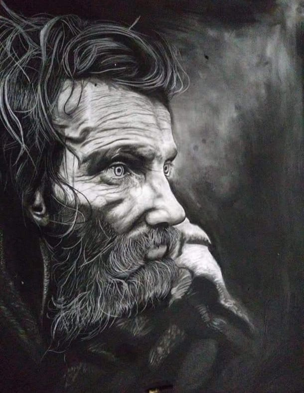
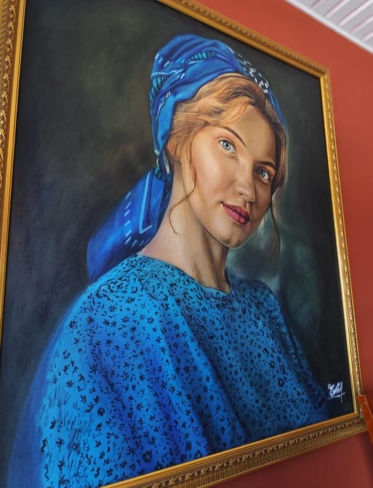

RESUMIDO
Lo esencial no se pinta… se revela


Lo esencial no se pinta… se revela








"Desde las raíces campesinas de San Vicente del Caguán, la esencia de William trasciende la forma. Su alma yace en la versatilidad de la pincelada que se libera para revelar el espíritu."